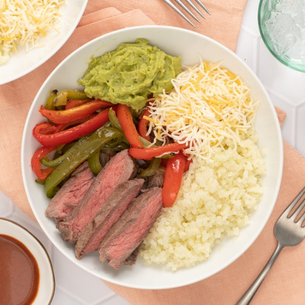

Cauliflower Rice Burrito Bowl with Steak, Peppers, Guacamole & Cheese

Prep Time
35 min
Nutrition (per serving)
701.5 kcalCalories
48.4 gProtein
21.7 gCarbs
49.3 gFat
Full nutrition table
| Calories | 701.5 kcal |
| Total fat | 49.3 g |
| Saturated fat | 17.2 g |
| Trans fat | 1.4 g |
| Cholesterol | 130.2 mg |
| Sodium | 572 mg |
| Carbohydrates | 21.7 g |
| Fiber | 10.4 g |
| Sugars | 8.1 g |
| Protein | 48.4 g |
| Potassium | 1477.8 mg |
| Calcium | 274.5 mg |
| Iron | 5.3 mg |
| Vitamin A | 252.8 IU |
| Vitamin C | 213.8 mg |
| Vitamin D | 6.9 IU |
Cookware
Ingredients
- 2 (12 oz) bagsfrozen, riced cauliflower
- 2green bell peppers
- 1 cupguacamole
- 2red bell peppers
- 1 cupshredded cheese, Mexican blend
- 1 ½ lbstriploin (New York strip) steak
- black pepper
- chili powder
- extra virgin olive oil
- hot sauce
- salt
Steps
- Preheat the oven to 450°F. Line a large baking sheet pan with aluminum foil to make cleanup easier (optional).
- Pat steak dry with paper towels and place on one half of the baking sheet. Drizzle with oil and season with spices on both sides.1 ½ lb striploin (New York strip) steak
2 tsp extra virgin olive oil
1 tsp chili powder
½ tsp salt
½ tsp black pepper - Wash, dry, trim, and seed bell peppers; slice lengthwise into strips. Add to the other half of the baking sheet, drizzle with additional oil, and season with spices; toss to coat and spread out in an even layer.2 red bell peppers
2 green bell peppers
4 tsp extra virgin olive oil
2 tsp chili powder
½ tsp salt
¼ tsp black pepper - Place baking sheet in the oven (it doesn't have to be fully heated) and roast, stirring veggies and flipping steak halfway through, until veggies are tender and steak is cooked to desired doneness, 13-15 minutes. Remove from oven.
- Meanwhile, preheat a large skillet over medium-high heat.
- Once the skillet is hot, add oil and swirl to coat the bottom. Add riced cauliflower, water, and salt to the skillet; cook, stirring occasionally, until liquid has evaporated and cauliflower is tender, 5-6 minutes. Remove from heat and cover to keep warm.2 tsp extra virgin olive oil
2 (12 oz) bags frozen, riced cauliflower
⅓ cup water
¼ tsp salt - When the steak and veggies are done, transfer steak to the cutting board and let rest, 5 minutes.
- Thinly slice steak against the grain.
- Divide cauliflower rice, steak, veggies, guacamole, and cheese between bowls. Serve with hot sauce on the side and enjoy!1 cup guacamole
1 cup shredded cheese, Mexican blend
2 tsp hot sauce